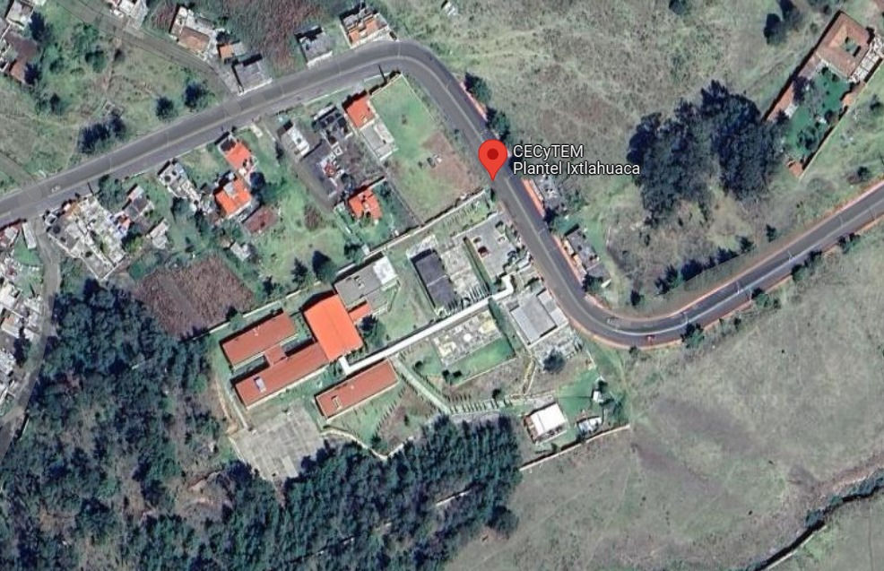

COLEGIO DE ESTUDIOS CIENTIFICOS Y TECNOLOGICOS DEL ESTADO DE MÉXICO.
PLANTEL IXTLAHUACA
Elaborado por:Cristopher Antonio Antonio.
Grupo: 404. Numero de Lista:3 Fecha de Elaboración: 12 de abril de 2024. Hora:08:01 a.m.
Croquis de Cecytem Plantel Ixtlahuaca
CECyTEM Plantel Ixtlahuaca, Unnamed Rd,, Santa Ana Ixtlahuaca, Méx.Ixtlahuaca
Dirección: Camino A Santa Ana S/N, Santa Ana Ixtlahuaca, Estado De México, C.P. 50760
Año De Creación: 1996
Director: Biol. Angélica Bernal Jiménez
Contacto:
Teléfono: (712) 283 09 84
e-mail: plantel.ixtlahuaca@cecytem.mx
Datos:
Alumnos: 1287
Personal docente: 49
Personal administrativo: 21
Edificios: 5
Aulas: 23
Laboratorios: 2
Áreas administrativas: Si
Talleres y salas de cómputo: 2
Áreas deportivas: 4
Equipo con que se cuenta: 171
Bibliotecas: 1 (6743 volúmenes)
Cafeterías

Todos los derechos reservados, Elaborado por Christopher Antonio Antonio, Tel:7298978737, Email:antchris689@gmail.com, Pagina web.www.caratula.gob.mx, Domicilio desconocido.